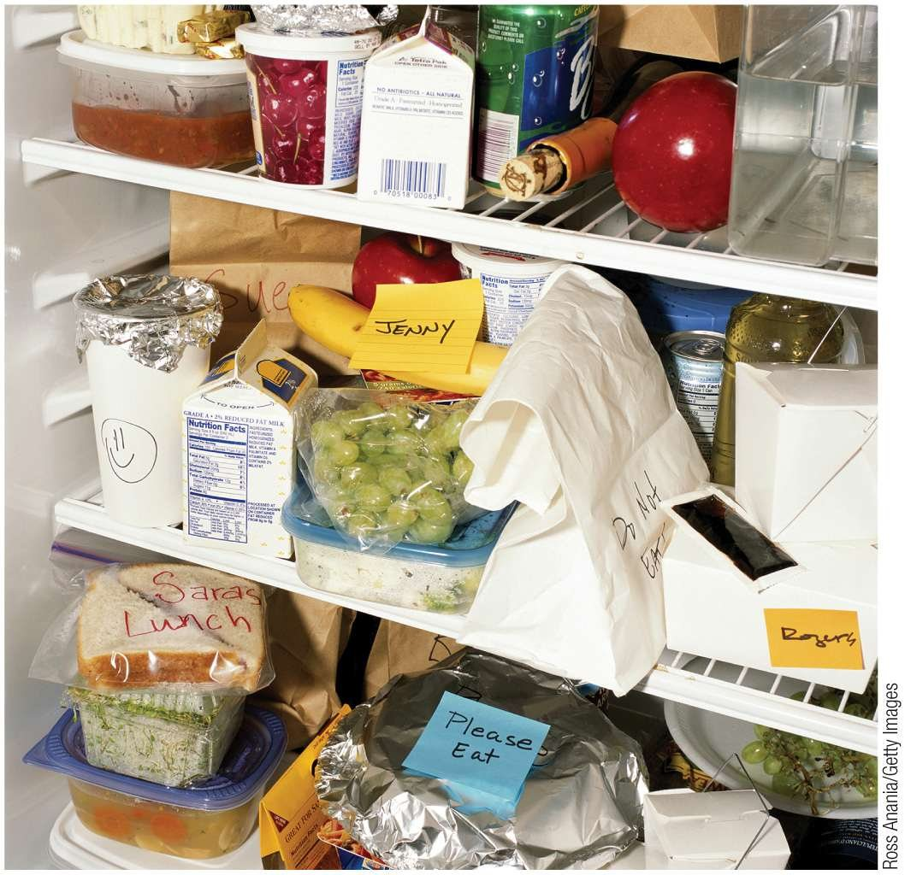
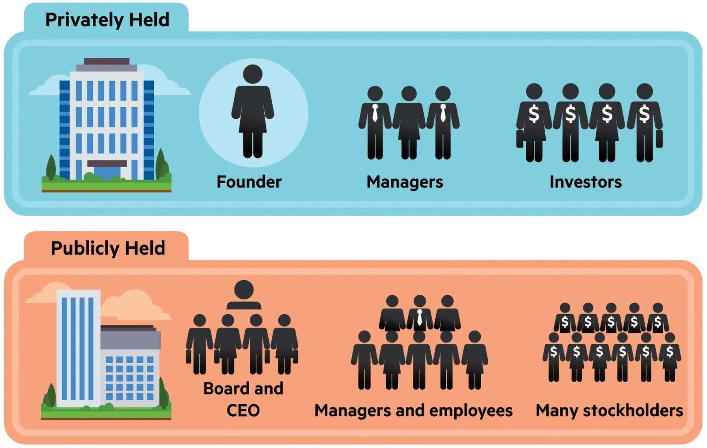
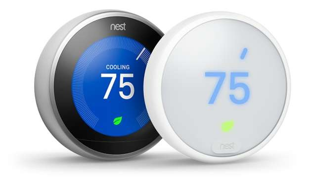
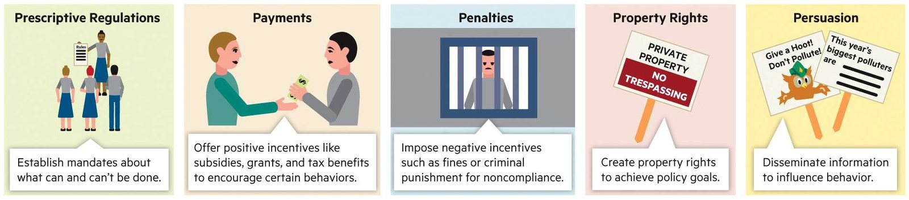
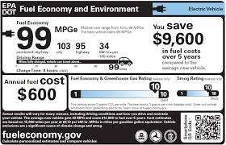
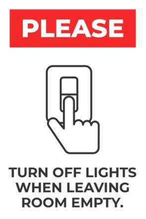

Decision Making and Governance
Why people fail to cooperate when everyone would gain, and what rules, markets and nudges can do about it.
Key terms for today
In the NBA draft lottery, which team gets the best chance at the top pick?
Today's big ideas

1 · Collective action problemsWhy do people fail to cooperate even when everyone would gain?
Free riding, the tragedy of the commons and the prisoner's dilemma.

2 · Three solutionsWho can fix a shared problem?
Markets, governments and civil society, each with strengths and limits.

3 · Changing behaviorHow do we get people to choose differently?
Incentives and constraints, persuasion, bargaining, coercion and nudges.
Enter today's code
Your instructor shows a code on screen at the start of class. Checking in counts toward your participation grade.
About what share of the world's biodiversity do Indigenous Peoples help protect on their lands?
Today we look at social systems
We call this the SET frame: social, ecological and technological. You will use it in today's exercise.
What shapes a behavioral decision?
Quick question: why do you recycle, or not?
Tap to check.
Most answers mix all four: what you believe, what you value, what your neighbors do, and what the rules and bins make easy.
The collective action problem
Free riding
Enjoying the benefit without paying your share, like leaving others to clean the shared fridge.
Tragedy of the commons
Everyone takes a little too much from a shared resource, until it is gone.
Prisoner's dilemma
Each side does better by acting alone, so both end up worse off than if they had cooperated.
Whose job is it to clean the fridge?
Quick question: what usually happens, and why?
Tap to check.
Everyone waits for someone else, so the fridge gets worse. Each person's best private choice leaves the group worse off. That is a collective action problem.
Quick question: how could an office fix it?
Tap to check.
A rule and a rotation (government-style), a cleaning fee that hires someone (market), or a team agreement everyone keeps (civil society).
Collective interest matters
What is best for me
Each person, company or team wants to win, save money or keep its own stuff safe.
What is best for all of us
Clean air, a healthy forest, a fair league, a stable climate. Nobody owns them alone, and everybody needs them.
Three solutions, working together
Thirty rivals who agree on rules
Rules as described in public NBA materials and may change. Check the current NBA rules before class.
Private ownership and public ownership
Suppose the Suns finish last in 2028
In the 2028 season, the Phoenix Suns end with the worst record in the league. Under the draft rules, that gives them the best odds of a top pick. This is a made-up case.
1. How is the draft a collective action?
2. How does it help a private-ownership, market-based system in the US?
Hint: think of 30 owners, one shared league, and what would happen to fans and team values if the same teams always won.
Five tools government can use

Four qualities of good governance
Legitimacy
People accept that the government has the right to make the rules.
Coercion
It can enforce the rules with fines or force when people break them.
Capacity
It has the money, skills and agencies to carry the rules out.
Responsiveness
It listens to people and adjusts when conditions change.
A city offers a tax rebate to people who install solar panels. Which government tool is that?
Which collective action problem is it?
Teaching examples made up for this lecture. Your answers are checked in your browser and are not recorded.
How we think about behavioral decisions
Structured by incentives and constraints
People respond to rewards and limits in their surroundings.
People act to achieve goals
Choices are purposeful, even when they look odd from outside.
People can create rules
We are not only shaped by rules. We can write, change and break them.
Automatic thinking and confirmation bias
Fast, easy and usually right
Our brain jumps to a first answer without effort. It saves time, but it can be wrong when a question looks easy and is not.
We look for proof that we are right
We notice facts that fit what we already believe and skip facts that do not. A first guess then feels more certain than it should.
Quick question: how can this hurt a group decision?
Tap to check.
If everyone grabs the first answer and then only reads news that agrees with it, a group can keep a weak rule for years. Slowing down and asking "what would show me I am wrong?" helps.
The halo effect: the protein fad
Quick question: what could you check before you trust the label?
Tap to check.
Turn the package over. Read the full nutrition label and the ingredient list, not just the front claim.
Teaching examples. Check current product labels and nutrition guidance before class.
Persuasion, bargaining or coercion?
Persuasion
Appeal to quality, convenience or time. "This is easier and cheaper."
Bargaining
Trade favors or exchange something. "I'll do this if you do that."
Coercion
Enforcement or a ban. "You may not do this, and you will be fined."
Educate, give feedback, ask for commitment, nudge

Educate
Give clear information, like a fuel economy label on a new car.
Feedback
Show people their own use, like a smart thermostat that reports energy.
Commitment
Ask people to pledge in public, such as promising to cut energy use this month. People tend to keep promises they have said out loud.

Nudge
Make the better choice the easy one, like a sign by the switch.
Incentives and constraints
Incentives
- Fuel-efficient cars
- Tax rebates
- Research grants
Constraints
- Rules and regulations
- Enforcement
- Product bans
People know the rules and respond creatively
People learn and adapt
They can create rules and new ways of doing things.
Short-term interest wins
The result when individuals chase short-term interest and deviate from the rules or norms in society.
Quick question: what is a perverse result of a rule?
Tap to check.
A rule built to cut waste that people dodge by dumping at night. Good rule design expects people to respond, and watches for it.
Why do people often fail to cooperate even when everyone would gain?
Make the choice that is good for everyone the easy choice.
- Collective action problems appear when individual choices add up to a worse result for everyone.
- Markets, governments and civil society each help, and they work best together.
- Rules, incentives and nudges change behavior, but people respond strategically.
- Even private businesses in a market system agree on shared rules when the whole system depends on it.